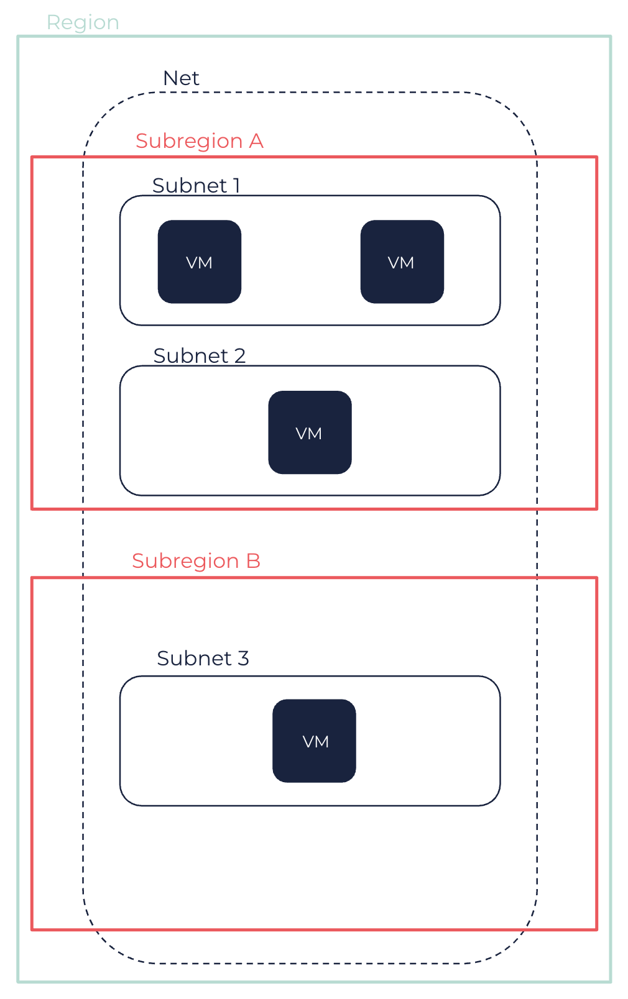

About Nets
Nets are virtual networks dedicated to your account in a Region, in which you can launch Cloud resources. These resources must be launched in Subnets and can either be connected to the internet or not.
You use route tables to route traffic from each Subnet, and security groups to protect your resources. Nets also enable you to create a peering connection with another Net, to use multiple network interfaces for your virtual machines (VMs), and create DirectLink or VPN connections.
Nets and Subnets
A Net is a virtual network that you define, isolated in the OUTSCALE Cloud and dedicated to your account. You can create VMs and resources in your Net. Nets are created for a whole Region.
When creating a Net, you specify a range of IPs in CIDR notation, that can then be used for your resources launched into this Net. This CIDR block must fit within the RFC 1918 ranges, which consist of the following three blocks:
-
10.0.0.0 - 10.255.255.255 (10/8 prefix)
-
172.16.0.0 - 172.31.255.255 (172.16/12 prefix)
-
192.168.0.0 - 192.168.255.255 (192.168/16 prefix)
For more information, see the RFC 1918 documentation.
|
The network portion of the CIDR block must be between /16 and /28. You cannot modify the CIDR block of a Net once created. If your Net becomes too small for your resources, you can create a larger one and migrate your VMs into it using OUTSCALE machine images. For more information, see OUTSCALE Machine Images (OMIs). |
After creating a Net, you need to create one or more Subnets into it, as resources must be launched into Subnets. Subnets correspond to sub-networks within your Net, to which you assign a range of IPs in CIDR notation. The CIDR block of each Subnet must be part of the Net CIDR block, and Subnets CIDR blocks must not overlap. Subnets are created in a Subregion, and you can create one or more Subnets in each Subregion of the Net Region.
|
In each Subnet of a Net, 3DS OUTSCALE reserves the first four IPs and the last IP of the CIDR block. You cannot assign these IPs to resources. For example, in a Subnet with CIDR 10.0.0.0/24, the following IPs are reserved:
|

A Net or a Subnet can be in one of the following states:
-
pending: The creation process is in progress. -
available: The Net or Subnet is created and you can launch resources into it. -
deleting: The Net or Subnet is being deleted.
When using a Net, you can set the tenancy option for the whole Net when creating it. If you set the Net tenancy to default, you have to set the tenancy attribute to dedicated for each VM you want to be on a dedicated server. If you set the Net tenancy to dedicated, the tenancy attribute of VMs created in the Net is automatically set to dedicated. You cannot modify the tenancy option of your Net once created.
For more information about VMs tenancy, see About VMs.
Subnet Routing and Security
Each Subnet must be associated with a route table to specify the allowed routes for outbound traffic leaving the Subnet. A route table, called the main route table, is created by default in your Net, and every Subnet is automatically associated with it at creation. The routes contained in the main route table can be modified. You can also create your own route tables and associate them with your Subnets, or set one of them as the main one. It is recommended to use one route table per Subnet. For more information about route tables and routes, see About Route Tables.
Security groups enable you to control access to your VMs in your Net. Security groups act as a set of firewall rules that, in a Net, control both inbound and outbound flows. When creating a VM in your Net, you must associate it with one or more security groups. If you do not specify any security group, the VM is automatically associated with the default security group that is automatically created with your Net. You can then modify the rules of your custom security group or of the default security group depending on your architecture and the controls you want to configure. For more information about security groups and security group rules, see Security Groups.
|
In a Net, you can allow access to and from:
|
|
By default, VMs within a same Subnet can communicate with one another without any security group rules required, thanks to firewall bypass. Firewall bypass consists in disabling security groups in order to reduce overall latency between VMs. It also prevents issues for specific protocols, like those used by Microsoft Windows. For more information, see User Data Tags Reference > Firewall Bypass. If you want to have further security between two VMs (for example, one in a DMZ and one in an internal network), you can place them in different Subnets or disable this feature. You can disable this feature by adding, before creating Subnets, the This behavior cannot be modified by tags once you have created a Subnet in the Net. |
As it is recommended to use a route table per Subnet, it is also recommended to use one security group per Subnet too. This corresponds to creating a Subnet for one application, with its appropriate route table and security group.
You can also use Elastic Identity Management (EIM) to control who can access, create, and manage resources in your Net. For more information, see Elastic Identity Management (EIM).
IP Addressing and Access to the Internet
Every VM created in a Net is assigned a primary private IP, that is not reachable over the internet and that can be used for communication between VMs in the Net. Contrary to the public Cloud, you can choose the private IP associated with VMs created in a Net Subnet. If you do not specify a private IP when creating them, this one is automatically chosen within the Subnet range.
|
RunInstances API requests let you choose the private IPs of multiple VMs you create at the same time using the |
You can add additional private IPs, called secondary IPs, to a VM in a Net using network interface cards (NICs). For more information, see Network Interface Cards (NICs).
By default, VMs created in a Net are not assigned a public IP, and can only access one another. To connect VMs in a Net to the internet, you must use public IPs, that are static public IPs that you can associate to a VM, a network interface or a NAT service. For more information, see Public IPs.
You can connect VMs in a Net to the internet directly or indirectly:
-
To directly connect VMs in a Net to the internet, you must associate them with a public IP and use an internet service to forward traffic to and from the internet. For more information, see Using Internet Services for Direct Connections.
-
To indirectly connect VMs in a Net to the internet, you must use a NAT service that bears the public IP and forwards traffic to and from the internet on behalf of the VMs. For more information, see Using NAT Services for Indirect Connections.
In either case, you need to route the 0.0.0.0/0 traffic of the Subnet in which the VMs are located to the internet service or the NAT service. You also need to add appropriate rules to the security groups of your Subnets. Allowing indirect access to the internet enables, for example, VMs to search for available updates.
|
By default, VMs in a Net use a preconfigured OUTSCALE domain name. If you created your VMs using an official OMI, a default OUTSCALE NTP server is also configured for them within the OMI with no action required on your side. For more information about OUTSCALE NTP servers, see OUTSCALE NTP Servers. To use another domain name or NTP server for your VMs in a Net, you can create a DHCP options set with the options you need and attach it to the Net. For more information, see About DHCP Options. |
Nets and Other Services
Nets can be connected to other networks using the following OUTSCALE services, which also require to create a virtual gateway (VGW) and, for VPN connections, a client gateway (CGW):
-
DirectLink: You can set up a physical connection between your internal network and a DirectLink location where your Net is to directly access your resources. For more information, see DirectLink.
-
Net Peering: You can peer two Nets to allow resources in each one of them to communicate with one another. For more information, see Working with Net Peerings.
Related Page